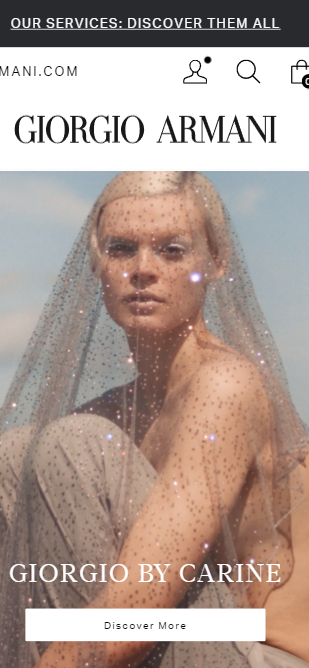
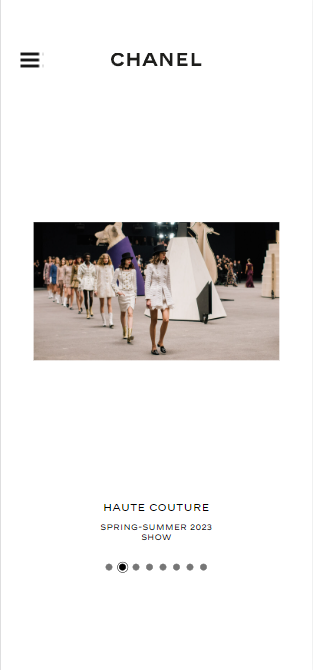
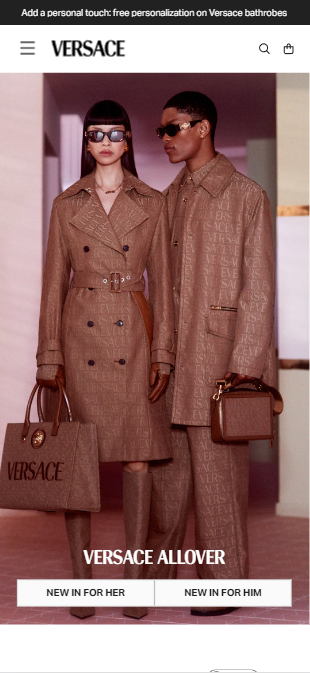

Visual Balance
GIORGIO ARMANI
Giorgio Armani Website Link
I chose Giorgio Armani's website as a great representation for 'Visual Balance'. I felt like this was a great representation for Visual Balance because it is visually pleasing to the eye and the objects within the photo balance each other out. I chose to screenshot a proper photo from the website that would clearly display the variety of detail within the photo to not only compliment the aesthetic of the website, but that is also pleasing to the eye.
Emphasis and Contrast
CHANEL
Chanel Website Link
Chanel's website was a great example of displaying Emphasis and Contrast. As you can see within the website, the other two screenshots of the website have a black bar at the top, while the Chanel website has a clean white cut at the top because majority of the website is in all white. Having the Chanel website in the middle of those other two website, highly defines the white border of the website compared to the other ones.
Color
VERSACE
Versace Website Link
Looking at the Versace website, you can tell how the color coordinates with the aesthetic of the brand and website overall. I chose to screenshot this specific photo from the website, because the color brought the website to life. As we can see from the screenshot, the colors are not vibrant but they are fitting to photo. In the photo the models are wearing a brown colored attire while the background of the photo is a light pink. Not only is it light pink, but I also made sure to match the color pallettes of my website the same way.